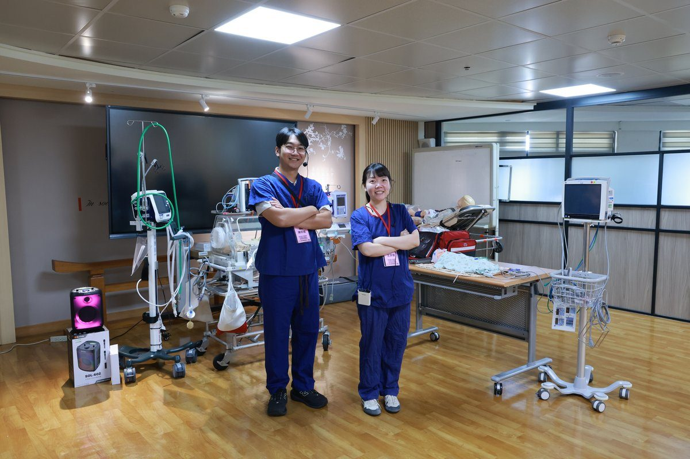

花東兒童重症轉運 慈院攜手跨院強化照護

可樂電子報小編/編輯
花東地區幅員狹長，當新生兒或兒童面臨急重症，需要跨院轉診接受進一步治療時，如何在轉運途中維持生命徵象穩定，是醫療團隊的重要課題。10月31日，花蓮慈濟醫院舉辦「東區高危險妊娠與兒童重症轉運照護研習會」，邀集花東多家醫院醫護人員，透過專題課程與情境模擬實作，強化新生兒及兒童急重症評估、處置與轉運能力，朝轉診流程標準化邁進。

花蓮縣衛生局局長朱家祥表示，花蓮慈院為「優化兒童醫療照護網絡計畫」東區核心醫院，肩負花東兒童重症轉運及照護的重要責任。面對少子化，每個孩子的生命都格外珍貴，除了強化重症醫療量能，衛生局近年也從公共衛生端推動孕產婦照護、疾病篩檢及預防接種，期盼透過醫療與公衛合作，降低新生兒及嬰兒死亡風險。

花蓮慈院副院長張宇勳指出，花東地域廣闊、醫療資源分佈不均，急重症轉運無法單靠一家醫院完成，因此發展由當地醫院先行穩定病人、再與核心醫院合作後送的模式。小兒部主任陳明群也表示，面對花東醫療人力與地理環境的挑戰，更需要各院群策群力，建立緊密的合作關係，讓有需要的孩子獲得適切照護。

負責這次研習規劃的花蓮慈院小兒科吳政宏醫師，邀請新光醫院教學研究部主任穆淑琪醫師、國立陽明交通大學附設醫院沈平醫師、林口長庚紀念醫院兒童內科部副主任林建志及臺大醫院小兒部兒童加護病房吳恩婷醫師，分享高危險妊娠、新生兒外接，以及兒童神經、呼吸與心臟急重症轉運等實務經驗。

穆淑琪醫師強調，高危險妊娠個案若能在生產前轉診至具備適當照護能力的醫院，通常比新生兒出生後再轉運更有利於預後。沈平醫師提醒，轉運前應確實穩定新生兒的呼吸、體溫與血糖，並做好途中突發狀況的準備。林建志醫師指出，兒童並非成人的縮小版，重症轉運應視為加護照護的延伸；吳恩婷醫師則分享轉運前評估、設備準備及持續監測的重要性。

現場模擬實作情境之一，是「一名出生僅三天的男嬰，患有先天性心臟病，出現呼吸急促及休克情形，需要轉送花蓮慈院接受治療」。由臺大兒童醫院兒童加護病房護理師王羿雯、陳宗虢帶領學員，分別扮演轉出端與接收端醫院的護理人員，模擬轉診時的病情說明、交班過程，以及轉運前應完成的準備工作。
臺東基督教醫院產兒科護理長賴玉菁分享，過去交班「對方問什麼，我們就回答什麼」，如今有跨院外接團隊協助，轉運作業更加便利；這次課程讓她對氣管內管固定、藥物交班及設備設定有更清楚的認識，也學習有條理地傳達病人狀況、用藥需求與轉診原因。花蓮慈院護兒中心副護理長曹雅晴則表示，透過研習，團隊對轉運前準備、途中生命徵象監測及突發狀況處理有更完整的認識，未來將運用於單位訓練。
綜合討論時，與會醫師提出建立單一轉診聯繫窗口的建議，林口長庚及臺大兒童醫院則分享相關實務經驗。陳明群主任表示，花蓮慈院未來將製作標準化轉診檢核表，強化院際溝通效率；吳政宏醫師也說，兒童重症照護不可能由單一醫院獨力完成，期盼透過持續交流與實作訓練，讓花東醫療團隊建立共同的轉運流程與默契。
📸 更多現場紀實影像


🌟 掌握花蓮在地第一手資訊・歡迎訂閱追蹤
深度紀實報導、在地精采影音專題，第一時間接收最新消息！